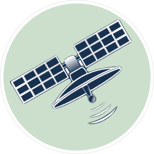
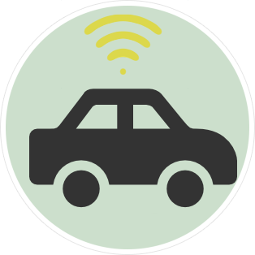
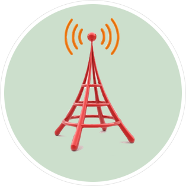

1. Sattelit
Terdapat lebih dari 30 Satelit GPS yang secara konsisten mengirimkan signal ke Bumi. Sinyal tersebut berisi posisi masing-masing satelit pada saat itu dengan sangat akurat.
2. GPS Tracker
Sinyal dari satelit akan ditangkap oleh Reciever Dilacak yang telah dipasangkan di kendaraan atau aset bergerak anda. Dengan menerima sinyal dari minimum 3 satelit, Reciever Dilacak bisa menentukan secara tepat posisi kendaraan dengan proses trilaterion/triangulation.


3. GSM Transmiter
Perangkat Reciever Dilacak juga dilengkapi dengan perangkat GSM yang digunakan untuk mengirimkan data posisi dan metrics lainnya ke cell tower GSM, seperti layaknya smartphone, dan diteruskan ke Application Server Dilacak
4. Application Server, DataBase & SMS Gateway
Data yang dikirimkan oleh tiap Reciever Dilacak, akan diterima di Application Server. Di sini sistem kami akan memproses dan menyimpan semua data kendaraan anda. Terdapat pula SMS Gateway yang berfungsi untuk menirimkan SMS kepada pelanggan untuk alert-alert yang telah ditentukan
5. Clients
Setelah Application Server kami memporses data kendaraan anda, semua data seperti posisi, kecepatan, dan status kendaraan anda bisa anda lihat di Browser Komputer atau Smartphone anda